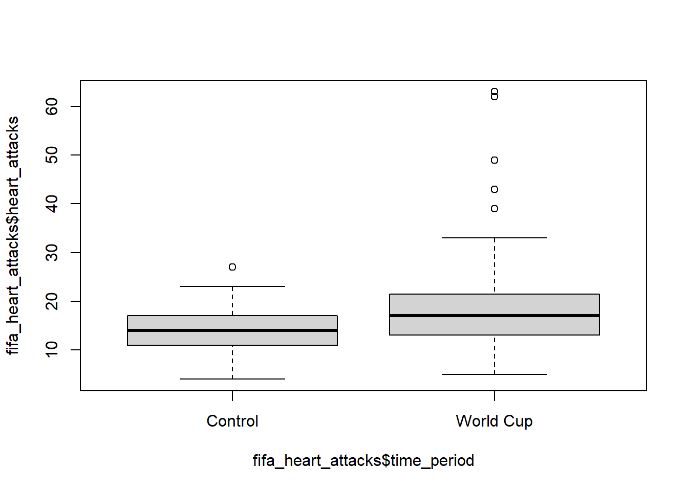
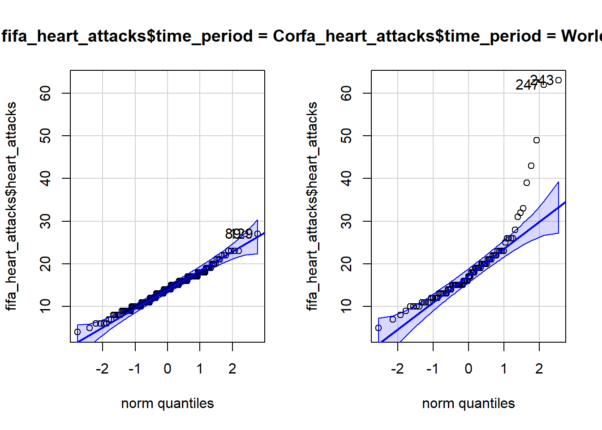
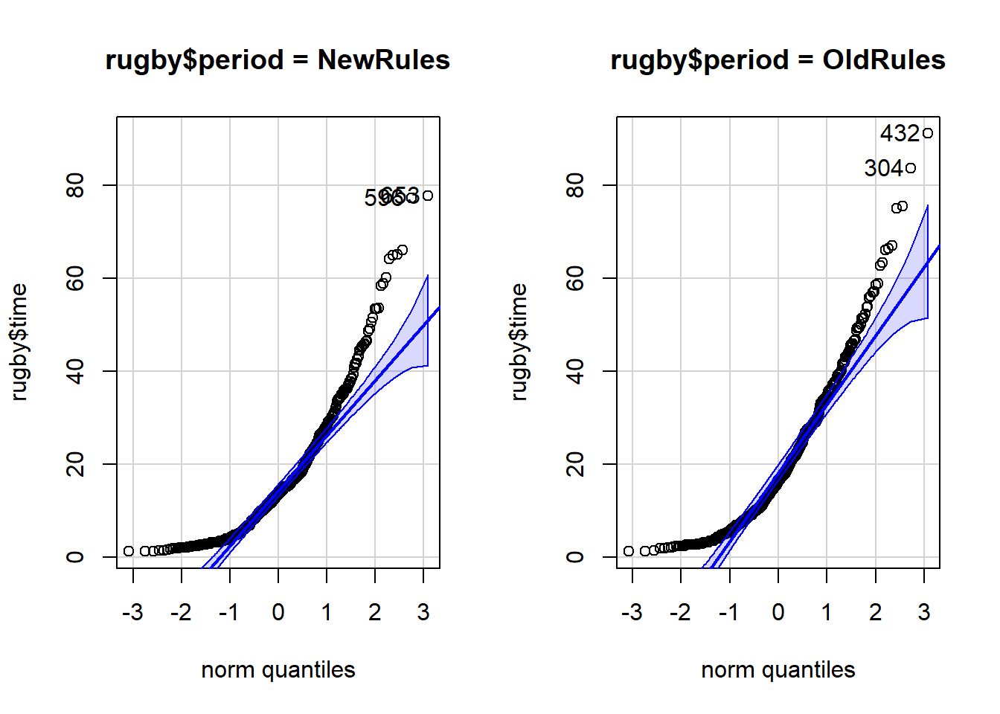

boxplot(data$response_variable)Error in data$response_variable: object of type 'closure' is not subsettablefavstats(data$response_variable)Error in favstats(data$response_variable): could not find function "favstats"In many situations we would like to compare averages from different populations. In these situations, we take 2 random samples from each population and perform statistical tests to determine if the population means are significantly different. Because these two groups of individuals are sampled independently, we call this analysis Independent 2-Sample t-test.
Alternatively, in many experimental designs, participants are randomly assigned into a treatment and a control group. The randomization process ensures that there is no association between participants in either group. They are independent.
When 2 random samples are taken from 2 separate populations, or when a group of people are randomly assigned into treatment groups, the samples are independent.
This differs from the dependent t-test. Recall that samples are dependent when knowing who or what is in one group determines who or what is in the second group.
Some examples include:
The null hypothesis test for independent samples is:
\[H_o: \mu_1 = \mu_2\] The alternative hypothesis depends on context of the research question and can be, as before:
\[H_a: \mu_1 (>, <, \ne) \mu_2\]
A 2-sample independent t-test in R requires a slight modification to the 1-sample and dependent t-tests already performed. The syntax should look familiar.
Recall that when we created a boxplot() or did favstats() for one set of data it looked like:
boxplot(data$response_variable)Error in data$response_variable: object of type 'closure' is not subsettablefavstats(data$response_variable)Error in favstats(data$response_variable): could not find function "favstats"with data$response_variable corresponding to our quantitative variable of interest.
When we wanted to break the analysis down by a grouping factor we used the ~ notation to add a group variable:
boxplot(data$response_variable ~ data$grouping_variable)Error in data$response_variable: object of type 'closure' is not subsettablefavstats(data$response_variable ~ data$grouping_variable)Error in favstats(data$response_variable ~ data$grouping_variable): could not find function "favstats"We use the exact same modification for a t-test with 2 groups:
t.test(data$response_variable ~ data$grouping_variable, alterntive = "greater")Error in data$response_variable: object of type 'closure' is not subsettableRecall that the t-test() function uses mu=0 as a default, we do not need to specify it in the function because the null value when comparing 2 groups is 0.
NOTE: In R, group 1 and 2 are determined alphabetically according to the labels in the dataset.
Recall that confidence intervals are necessarily two-sided. So the code for a 99% confidence interval looks like:
t.test(data$response_variable ~ data$grouping_variable, conf.level = .99)$conf.intError in data$response_variable: object of type 'closure' is not subsettableWe interpret a confidence interval for the difference of means as follows:
I am 99% confident that the true difference of the means is between [lower limit] and [upper limit].
We can usually do better within the context of a research question:
Does the frequency of heart attacks increase during the World Cup?
The number of heart attacks in the Greater Munich area was measured before and during the period when Germany hosted the FIFA World Cup. This study was published in the New England Journal of Medicine
# Load Libraries
library(tidyverse)
library(mosaic)
library(rio)
library(car)
# Load Data
fifa_heart_attacks <- import("https://byuistats.github.io/M221R/Data/fifa_heart_attacks.xlsx")Look at the data.
Create summary statistics tables of the number of heart attacks for each group.
Create a side-by-side boxplot for the during the World Cup and the Control.
glimpse(fifa_heart_attacks)Rows: 273
Columns: 4
$ date <chr> "May 1, 2003", "May 2, 2003", "May 3, 2003", "May 4, 200…
$ heart_attacks <dbl> 12, 12, 6, 16, 13, 17, 14, 16, 12, 12, 16, 13, 13, 14, 1…
$ time_period <chr> "Control", "Control", "Control", "Control", "Control", "…
$ comments <chr> "Number of heart attacks in the Greater Munich area", "b…favstats(fifa_heart_attacks$heart_attacks ~ fifa_heart_attacks$time_period) fifa_heart_attacks$time_period min Q1 median Q3 max mean sd n
1 Control 4 11 14 17.0 27 14.04396 4.152912 182
2 World Cup 5 13 17 21.5 63 19.00000 9.809293 91
missing
1 0
2 0# The y values goes first, the x value goes second.
boxplot(fifa_heart_attacks$heart_attacks ~ fifa_heart_attacks$time_period)
Check to see if the means from both groups are normally distributed:
qqPlot(fifa_heart_attacks$heart_attacks, groups = fifa_heart_attacks$time_period)
Can we trust that the central limit theorem applies? Since n for both group are > 30, yes.
These data look ready for analysis.
Write out your null and alternative hypotheses.
\[Ho: u_c = u_w\] \[Ha: u_c < u_w\]
Check the alphabetical order:
unique(fifa_heart_attacks$time_period)[1] "Control" "World Cup"Perform the appropriate t-test.
t.test(fifa_heart_attacks$heart_attacks ~ fifa_heart_attacks$time_period, alternative = "less")
Welch Two Sample t-test
data: fifa_heart_attacks$heart_attacks by fifa_heart_attacks$time_period
t = -4.6172, df = 106.43, p-value = 5.464e-06
alternative hypothesis: true difference in means between group Control and group World Cup is less than 0
95 percent confidence interval:
-Inf -3.174984
sample estimates:
mean in group Control mean in group World Cup
14.04396 19.00000 # Response variable first, then the grouping variableState your conclusion: Because the p-value is low, I reject the null hypothesis.
Calculate the 97% confidence interval for the difference of the means.
t.test(fifa_heart_attacks$heart_attacks ~ fifa_heart_attacks$time_period, conf.level = 0.97)$conf.int[1] -7.317028 -2.595060
attr(,"conf.level")
[1] 0.97In context of the research question, interpret the confidence interval: I’m 97% confident that the heart attack frequency, during the World Cup period, is between 2.595060 and 7.317028 percent higher than the normal time in average.
Rugby is a popular sport in the United Kingdom, France, Australia, New Zealand and South Africa. It is gaining popularity in the US, Canada, Japan and parts of Europe. Some of the rules of the game have recently been changed to make play more exciting. In a study to examine the effects of the rule changes, Hollings and Triggs (1993) collected data on some recent games.
Typically, a game consists of bursts of activity that terminate when points are scored, if the ball is moved out of the field of play or if a violation of the rules occurs. In 1992, the investigators gathered data on ten international matches which involved the New Zealand national team, the All Blacks. The first five games were the last international games played under the old rules, and the second set of five were the first internationals played under the new rules.
For each of the ten games, the data give the successive times (in seconds) of each passage of play in that game.
You will investigate whether the mean duration of the passages has dropped under the new rules.
Use a level of significance of 0.01.
rugby <- import("https://byuistats.github.io/M221R/Data/quiz/R/nz_rugby.csv")Create a side-by-side boxplot for the amount of reported passage of play before and after the rule changes.
Add a title and change the colors of the boxes.
What do you observe?
Create a table of summary statistics of play time for before and after the rule change. (favstats()):
State your null and alternative hypotheses:
NOTE: The default for R is to set group order alphabetically. This means Group 1 = NewRules
Compare the the time per play under the new and old rules:
qqPlot(rugby$time, groups = rugby$period)
Do the data for each group appear normally distributed?
Why is it OK to continue with the analysis?
Perform a t-test.
What is the value of the test statistic?
How many degrees of freedom for this test?
What is the p-value?
What do you conclude?
Create a confidence interval for the difference of the average Importance Score between both groups:
The CDC provided the following information about COPD:
“Chronic obstructive pulmonary disease, or COPD, refers to a group of diseases that cause airflow blockage and breathing-related problems. It includes emphysema and chronic bronchitis. COPD makes breathing difficult for the 16 million Americans who have this disease. (Source: https://www.cdc.gov/copd, accessed December 1, 2022.)”
A study was conducted in which COPD patients walked as many steps as they could. They were then randomly assigned to either a hospital-based or community-based treatment program. At the conclusion of the program, the number of steps the patients could walk without stopping was measured again. The difference in the number of steps (post - pre) is recorded in the data frame copd_rehab.
copd <- import("https://byuistats.github.io/M221R/Data/copd_rehab.xlsx") %>% pivot_longer(cols=c("community", "hospital"), names_to = "Treatment", values_to = "Steps") %>% select(Treatment, Steps) %>% arrange(Treatment)Create side-by-side boxplots and summary statistics for the community and hospital groups:
Check to see if the means are expected to be normally distributed.
Can trust the CLT for our test statistic and P-value?
The data cleansing has been performed for you. You’re welcome.
State your null and alternative hypotheses.
Ho:
Ha:
Which group is considered group 1 in this data?
Run the appropriate t-test.
#t.test()State your conclusion about the hypothesis test.
Create a 95% confidence interval for the difference between the means
Interpret the 95% confidence interval for the mean difference between the community-based and hospital-based groups.